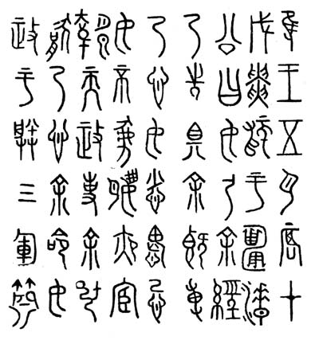

Em 771 a.C., sob os ataques dos nômades, caiu a capital da dinastia Zhou, o rei You-wang foi capturado, e seu filho, o rei Ping, decidiu transferir a capital para o leste, a Chengzhou. Começou então um período da história conhecido como Zhou Oriental.
Os primeiros três séculos desse período são chamados de Chunqiu. Isso porque esse trecho da história da dinastia Zhou foi registrado na crônica "Chunqiu", cuja autoria, segundo a tradição histórica chinesa, é atribuída a Confúcio. Os primeiros eventos registrados nessa crônica datam de 722 a.C., e os últimos, de 481 a.C. Os textos escritos dessa época servem como fonte para o estudo das características da língua chinesa tardia pré-clássica.
Dentre esses textos, as inscrições em bronze são as mais importantes. As inscrições em bronze dessa época ainda preservam algumas características herdadas do período anterior. Mas nelas também podem ser encontradas novas características ligadas ao conteúdo e estilo. A maioria das inscrições conhecidas em objetos de bronze da época do Zhou Oriental data do século VI a.C. Sua datação é frequentemente facilitada pelo fato de mencionarem figuras históricas cujos nomes são conhecidos por fontes crônicas.
Uma categoria diferente de inscrições desse mesmo período são os textos nos chamados "tambores de pedra". São dez inscrições poéticas gravadas em colunas de pedra que lembram vagamente tambores antigos chineses, daí o nome. Os tambores de pedra foram descobertos na província moderna de Shaanxi no século VII. Eles chamaram atenção dos estudiosos principalmente porque seus textos são estilisticamente muito semelhantes às canções do "Shijing".
O "Shijing" é um dos monumentos notáveis da cultura chinesa antiga. Em sua forma atual, é uma coleção de obras poético-cantigas, algumas das quais, sendo adaptações de canções folclóricas, remontam à antiguidade mais remota. No entanto, em geral, a língua do "Shijing" pertence ao período histórico que chamamos de língua chinesa tardia pré-clássica.
O "Shijing" é dividido em várias seções. A primeira delas ("Folclore dos Estados") agrupa canções por critério territorial — de acordo com os Estados do Zhou Oriental: Wei, Chen, Qin, Qi, Cao, entre outros. Além disso, nesta seção também estão incluídos Estados que já não existiam na época tratada — Bin, Tang, entre outros. Essa primeira seção inclui 160 canções, que sem dúvida têm como base obras do folclore antigo.
A segunda seção do "Shijing" ("Pequenas Odes") não tem subdivisões. As 80 obras reunidas nela são composições de autoria individual, pertencentes na maioria das vezes a poetas anônimos dos séculos VII e VI a.C.
Na verdade, a terceira seção do "Shijing" ("Grandes Odes"), que inclui 31 poemas, é bastante semelhante à segunda em suas características.
A última seção do "Shijing" ("Hinos") é subdividida em três partes: "Hinos de Zhou", "Hinos de Shang" e "Hinos de Lu". Na própria divisão das obras dessa seção, já se percebe uma seleção consciente: isso explica por que aqui só aparecem hinos relativos a um dos Estados subordinados ao Zhou — Lu. Ao todo, há 40 hinos. Assim, no total, o "Shijing" contém 305 obras distintas.
O fato de que a maioria dos monumentos desse período não tenha sido produzida na corte do rei Zhou, mas sim nos Estados feudatários, não é casual. Ele reflete as mudanças reais na situação política ocorridas após a transferência da capital: enfraquecimento do poder do rei Zhou, fortalecimento dos senhores feudatários, cujos domínios, com o tempo, tornaram-se quase totalmente independentes do Filho do Céu. Por isso, é possível que algumas das características da língua observadas nos monumentos dos séculos VII a V a.C. sejam explicadas não apenas por fatores cronológicos, mas também por diferenças regionais.
Textos usados nas lições 21–25:
lição 21 — «Qin-gong zhong», 576–537 a.C., Estado de Qin; «Jin-gong dian», 599–581 a.C., Estado de Jin;
lição 22 — «Zhu-gong zhong», 555–541 a.C., Estado de Zhu; «Shu-er zhong», cerca de 536 a.C., Estado de Xu (?);
lição 23 — «Shu-yi zhong», 581–554 a.C., Estado de Qi;
lição 24 — «Min bo», final do século VI a.C., Estado de Qi;
lição 25 — «Yan-er zhong» e «Wang sun zhong», datação precisa desconhecida (provavelmente século VI a.C.), Estado de Xu.

Inscrição no sino "Shu-yi zhong" (fragmento)
Lição 26: texto da inscrição em um dos "tambores de pedra" (Estado de Qin).
Lições 25–30: obras poéticas das seguintes seções do "Shijing" (nomes das canções segundo a edição de A. A. Shchukin; entre parênteses, a designação tradicional da seção):
lição 25 — «Encontro com os convidados», seção "Pequenas Odes" (II, I, 1);
lição 26 — «Canção da esposa esquecida», seção "Folclore dos Estados", Estado Bei (I, III, 1); «Orelhas de camundongo», seção "Folclore dos Estados", Zhou (I, 1, 3);
lição 27 — «Canção da esposa abandonada», seção "Folclore dos Estados", Estado Bei (I, III, 10);
lição 28 — «O novo palácio» (trecho), seção "Pequenas Odes" (II, IV, 5); «Em terra estrangeira», seção "Pequenas Odes" (II, IV, 3); «Canção da esposa sobre o lar abandonado», seção "Folclore dos Estados", Estado Bei (I, III, 14);
lição 29 — «Veio correndo para consolar», seção "Folclore dos Estados", Estado Yong (I, IV, 10); «Cardo», mesma seção (I, IV, 2); «Canção da noiva que rejeita o noivo», seção "Folclore dos Estados", Zhao (I, II, 6);
lição 30 — «Ode aos caluniadores», seção "Pequenas Odes" (II, V, 6); «Lá onde agora se curva o milheto», seção "Folclore dos Estados" (I, VI, 1).
A estrutura gramatical da língua tardia pré-clássica ainda não foi suficientemente estudada. Não existem trabalhos gerais sobre esse período.
Inscrição no tambor de pedra (Estado de Qin)
* A estrutura gramatical da língua tardia pré-clássica ainda não foi suficientemente estudada. Não existem trabalhos gerais sobre esse período.

Em 771 a.C., sob os ataques dos nômades, caiu a capital da dinastia Zhou, o rei You-wang foi capturado, e seu filho, o rei Ping, decidiu transferir a capital para o leste, a Chengzhou. Começou então um período da história conhecido como Zhou Oriental.
Os primeiros três séculos desse período são chamados de Chunqiu. Isso porque esse trecho da história da dinastia Zhou foi registrado na crônica "Chunqiu", cuja autoria, segundo a tradição histórica chinesa, é atribuída a Confúcio. Os primeiros eventos registrados nessa crônica datam de 722 a.C., e os últimos, de 481 a.C. Os textos escritos dessa época servem como fonte para o estudo das características da língua chinesa tardia pré-clássica.
Dentre esses textos, as inscrições em bronze são as mais importantes. As inscrições em bronze dessa época ainda preservam algumas características herdadas do período anterior. Mas nelas também podem ser encontradas novas características ligadas ao conteúdo e estilo. A maioria das inscrições conhecidas em objetos de bronze da época do Zhou Oriental data do século VI a.C. Sua datação é frequentemente facilitada pelo fato de mencionarem figuras históricas cujos nomes são conhecidos por fontes crônicas.
Uma categoria diferente de inscrições desse mesmo período são os textos nos chamados "tambores de pedra". São dez inscrições poéticas gravadas em colunas de pedra que lembram vagamente tambores antigos chineses, daí o nome. Os tambores de pedra foram descobertos na província moderna de Shaanxi no século VII. Eles chamaram atenção dos estudiosos principalmente porque seus textos são estilisticamente muito semelhantes às canções do "Shijing".
O "Shijing" é um dos monumentos notáveis da cultura chinesa antiga. Em sua forma atual, é uma coleção de obras poético-cantigas, algumas das quais, sendo adaptações de canções folclóricas, remontam à antiguidade mais remota. No entanto, em geral, a língua do "Shijing" pertence ao período histórico que chamamos de língua chinesa tardia pré-clássica.
O "Shijing" é dividido em várias seções. A primeira delas ("Folclore dos Estados") agrupa canções por critério territorial — de acordo com os Estados do Zhou Oriental: Wei, Chen, Qin, Qi, Cao, entre outros. Além disso, nesta seção também estão incluídos Estados que já não existiam na época tratada — Bin, Tang, entre outros. Essa primeira seção inclui 160 canções, que sem dúvida têm como base obras do folclore antigo.
A segunda seção do "Shijing" ("Pequenas Odes") não tem subdivisões. As 80 obras reunidas nela são composições de autoria individual, pertencentes na maioria das vezes a poetas anônimos dos séculos VII e VI a.C.
Na verdade, a terceira seção do "Shijing" ("Grandes Odes"), que inclui 31 poemas, é bastante semelhante à segunda em suas características.
A última seção do "Shijing" ("Hinos") é subdividida em três partes: "Hinos de Zhou", "Hinos de Shang" e "Hinos de Lu". Na própria divisão das obras dessa seção, já se percebe uma seleção consciente: isso explica por que aqui só aparecem hinos relativos a um dos Estados subordinados ao Zhou — Lu. Ao todo, há 40 hinos. Assim, no total, o "Shijing" contém 305 obras distintas.
O fato de que a maioria dos monumentos desse período não tenha sido produzida na corte do rei Zhou, mas sim nos Estados feudatários, não é casual. Ele reflete as mudanças reais na situação política ocorridas após a transferência da capital: enfraquecimento do poder do rei Zhou, fortalecimento dos senhores feudatários, cujos domínios, com o tempo, tornaram-se quase totalmente independentes do Filho do Céu. Por isso, é possível que algumas das características da língua observadas nos monumentos dos séculos VII a V a.C. sejam explicadas não apenas por fatores cronológicos, mas também por diferenças regionais.
Textos usados nas lições 21–25:
Inscrição no sino "Shu-yi zhong" (fragmento)
Lição 26: texto da inscrição em um dos "tambores de pedra" (Estado de Qin).
Lições 25–30: obras poéticas das seguintes seções do "Shijing" (nomes das canções segundo a edição de A. A. Shchukin; entre parênteses, a designação tradicional da seção):
A estrutura gramatical da língua tardia pré-clássica ainda não foi suficientemente estudada. Não existem trabalhos gerais sobre esse período.